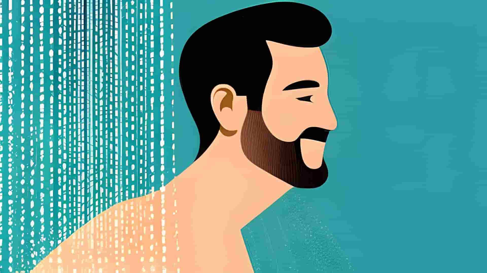

Five Clever Ways to Burn Calories Without Exercise

(Some of these examples are mildly painful, but that’s just something you have to get used to. You have to give some effort, but luckily, not a lot!)
Many people struggle to keep their weight low, let alone lose their bulking fat after deciding to go on a diet. Therefore, we have listed ten easy, fun, and inspiring ways to burn calories in a manner that won't make you feel much different.
Table of contents
These won't be life-changing measures such as “Running a marathon every day and completely cutting out sugar, fat, and unhealthy carbs.” No, this will be a series of small measures, choices, or habits that you can view and implement differently into your life to lose weight and make more progress than those who tried changing everything all at once and ended up quitting and going back to their old lifestyle on day three. So, let's get started:
Number one: Playing chess
You've probably heard all of this before, how it is so smart to play chess, as your brain burns a lot of calories because of all the work it's got to do. Maybe you took it into consideration, and then forgot all about it the next moment. Maybe you played a few games, learned something, and then -for some reason,- forgot to do it again the next day.
Not being able to stick to a healthy habit is a very common phenomenon. "If I cannot see this habit serving my need for overstimulating pleasure anytime soon, then why should I even bother to bear through with all this?" Your subconscious mind may ask itself one day, causing you to quit without even starting. It may make excuses like: "Oh well, you know, X or Y was just too hard, and it would take far too long for me to see any form of results." This is also untrue.
What I mean by this is the fact that the time will pass by on its own, and the only difference is what you did in that time. If you keep sowing something healthy, productive, or potentially money-generating, you will reap exactly that. Either it is a long-lasting life, knowledge, (or any other skills acquired by productivity.) or wealth, all depends on the effort.
If you put in six hours into something once every six months, it won't help you at all. But if you put in three, ten, fifteen, minutes, or maybe even an hour into something every single day, you are guaranteed to get what you want or work for. Now, back to chess, if you put in a few minutes of chess every day, you will probably burn 2, 3, or four percent more calories than you already were.
Think how skinny, shredded, and sexy you'll look with only a few of these other habits, put together consistently. You know what to do. Read on, and play a few minutes of challenging, good chess every day from now on.
Number two: Ice cold showers
This one will definitely have a lot of benefits. Either it is better skin or more discipline; this one sure makes you a better person. It is uncomfortable and/or painful though, so you'll need discipline to get you through with it.
If, for example, you should find yourself unmotivated to do things on certain days, especially on your own, you should keep this in mind: You are probably experiencing a low dopamine level. This means that you have very little motivation and "fighting spirit."
In order to get your motivation to "fly" again, you do something painful. This could be taking a cold shower. This is the way to hack your dopamine, AKA. your "Motivation chemical." This little trick also works a lot of other wonders; it, -as aforementioned,- replenishes and nourishes your skin. It burns off a lot of calories, and makes your blood flow really, really fast, meaning you'll be recovering from yesterday's "killer workout" in no time.
If, however, you find yourself so low on motivation that you dare not even try the cold shower, then this is my advice for you; don't procrastinate on your shower. Don't waste your valuable time. Rather have a five-minute hot shower, ended by thirty seconds of cold showering, without requiring any form of "mental preparation or warm-up" beforehand, than to sit for an hour on your toilet trying to find motivation to go for a ten-minute, ice-cold shower.
Just show up to practice as fast as possible, don't think through whether or not you'll take a hot or cold shower, and if you have energy and discipline (it's your own choice), you take a long, cold, and painful shower. Don't do it if you are sick or pregnant or whatever. Use common sense (as I hope you normally do).
Number three: Walk more!
One could argue that walking is a form of exercise. It depends, do you commonly do it intentionally? How fast do you walk normally, when not focusing on actually moving fast? No matter what; it is, in fact, really helpful to walk more.
If you have a choice between walking and driving to the supermarket, which would you rather? If you had to focus on saving time, drive. Of course, but if you could; walk! It is time spent outside, and you could even learn while doing it by listening to a helpful audiobook! That is definitely time spent productively.
Naturally, you can't walk if you are supposed to buy a fridge or something, but then you'll just listen to an audiobook in the car, plus, you'll save time for other things such as work or exercise. It's a win-win situation!
Another example is walking when you're at home. If you've just sat down and want to go get something, like your phone or a book, rather than asking someone else to do it for you; do it on your own. That's a lot of potential walking over a span of some time.
Another tip is to do some small form of exercise during advertising breaks when you're watching TV. You can choose the form of exercise yourself. Examples are pushups, situps, walking across the room, planking until failure, or wall sits.
Number four: Laughing, fidgeting, and drinking more water
If you literally want to laugh your way through your weight loss journey, simply laugh more! It's that simple. Laughter is called "The best medicine" for a reason. It holds a lot of health benefits, and it brings the calories down. Laughter increases metabolic rates by around fifteen percent, thus bringing you closer to your weight goal.

Fidgeting is also a great way to burn calories; more movement, more calories burnt. More calories burnt equals a healthier and happier life! You could try sitting with a small gadget, like a brain-teasing puzzle, or a grip trainer, when there is nothing else to do. Such as when you're on the bus or train, or maybe even in class, as long as it doesn't ruin your attention, that is.
The third advice listed above is to drink more water. According to our source, this has been proven by several studies to boost metabolism in overweight adults and children. Just make it a point to drink a few deciliters of water every waking hour or so, and you should be good. All of these benefits, almost effortlessly!
Number five: Other methods and our conclusion
When you are trying to burn calories, you should focus on your habits, what you eat, and which methods you should approach. You should, however, not try to commit to some life-changing program or some all-of-a-sudden fitness craze that you will quit within the third day. Instead, make a commitment to change little by little and implement small changes and habits as often as possible. The recommended time needed to fully implement a "bigger" habit like running every day or cutting out soda is three months.
Focus on improving your systems, set goals for yourself that are challenging enough for you to actually go and try, but keep in mind that you shouldn't get discouraged or disappointed if you:
- Set a very difficult goal for yourself, that you set for the sole purpose of exceeding your expectations.
- Fail to achieve implementing more than five habits all at once. Make an effort to implement as many as possible, but do not expect to be able to implement more than three "larger" habits.
When setting goals for yourself, take what you expect to achieve with mediocre effort, and multiply your goal by ten. Maybe even twenty. Otherwise, you won't bother to get out of bed and give an effort if you know that the goal won't bring anything big. Rather set a goal that will give you your maximum potential if you can give it maximum effort.
Some other things we recommend for burning calories are exercise, sleeping well, and sleeping more. Make an effort to be in bed for eleven hours if you aim to sleep for ten. Do not underestimate the power of good sleep, and do not use electronics with high levels of lighting before bed. You may use your phone right before bed, but do not forget to turn off the "blue light mode" and turn down the brightness. Eat healthily. Do not excessively eat any unhealthy foods and try to consume more water, salads, fruits, and vegetables. Good luck.
In conclusion, burning calories and achieving weight loss doesn't always have to involve traditional exercises. By incorporating clever habits into your daily routine, you can gradually burn calories without much effort. Playing chess, taking ice-cold showers, walking more, laughing, fidgeting, and drinking more water are some of the creative ways to enhance your calorie-burning process.

Remember to make gradual changes to your habits rather than attempting drastic transformations that are hard to maintain. Set challenging but achievable goals, and celebrate your progress, no matter how small it may seem. Alongside these clever methods, don't forget the importance of regular exercise, quality sleep, and a healthy diet to achieve optimal results in your weight loss journey. With determination and perseverance, you can reach your fitness goals and lead a healthier, happier life. Good luck!
Sources we have used for our statistics: Healthline.com and NDTV.com